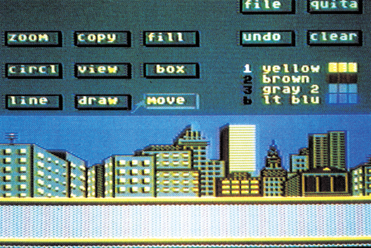
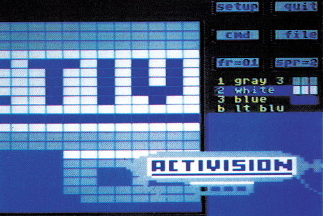
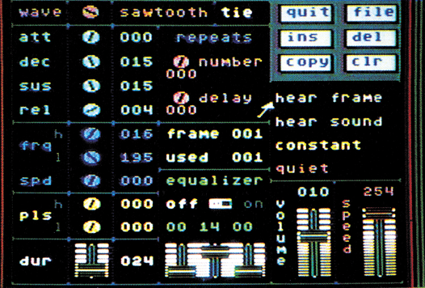
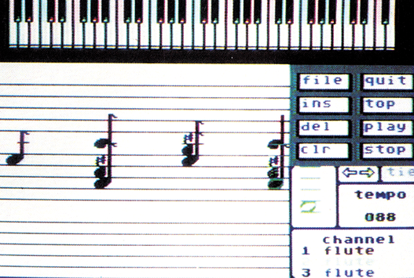
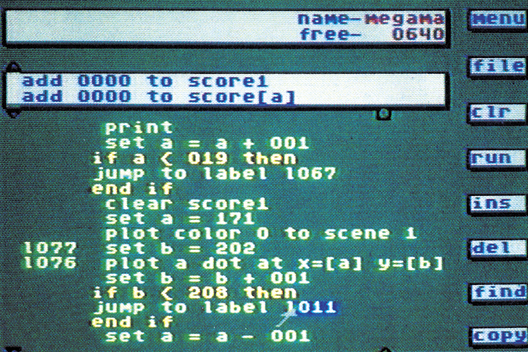
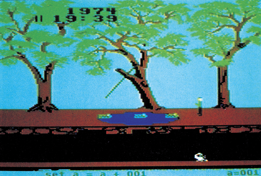

Spielprogramme im Selbstbau
Spiele programmieren muß nicht gleichbedeutend sein mit einer Menge Arbeit. Schlagender Beweis für diese Aussage ist der GameMaker von Activision. Außerdem können Sie mit dem GameMaker eine Reise nach San Francisco gewinnen.
Eine kleine Situationsbeschreibung: Sie haben sich gerade ein Spiel gekauft, packen es aus, laden es und fangen an zu spielen. Und nach einer Weile kommen Ihnen Gedanken ähnlich den folgenden: »Die Grafik ist an der Stelle aber sehr grob. Wer hat denn bloß diese bescheuerte Musik programmiert? Und die Punktewertung ist völlig unsinnig wie überhaupt das ganze Spiel. Äch, ein Programmiergenie müßte man sein, dann könnte man das alles sehr viel besser machen…«
Aber vor das eigene Spielprogramm haben die Götter nunmal den Programmierschweiß gesetzt — und der tropft heutzutage gleich literweise, da die Qualitätsansprüche gestiegen sind. Eigentlich muß ein anständiger Spieleprogrammierer auf den Gebieten Grafik, Sound, Programmierung und Kreativität ein Experte sein. Die großen Software-Firmen arbeiten deswegen nicht mehr mit Einzelprogrammierern, sondern mit kompletten Teams, in denen jeder seine Programmierspezialitäten ausspielen kann.
Was ist aber mit dem ambitionierten Computeranwender, der eine Idee für ein Spiel hat, sich aber aus verständlichen Gründen nicht an die Programmierung herantraut. Nun, dem Manne (und natürlich auch der Frau) kann geholfen werden. Ein neues Produkt von Activision namens »GameMaker« verspricht die Spieleprogrammierung wesentlich zu vereinfachen: »GameMaker ist sehr viel einfacher zu bedienen und doch sehr viel wirkungsvoller als normale Programmiersprachen« steht auf der Packungsrückseite.
»Einfacher« heißt aber nicht immer »einfach«. Denn auch der GameMaker kann aus einem Computer-Laien nicht so schnell einen Starprogrammierer machen. Als GameMaker-Benutzer müssen Sie nämlich immer noch programmieren. Dabei werden Sie allerdings so tatkräftig unterstützt, daß Sie sich auf die wesentliche Sache konzentrieren können: das Spiel.
Tolle Grafik mit wenig Aufwand
Die Problemkinder Grafik und Musik werden in mehreren, höchst komfortablen Editoren erstellt und dann mit einfachen Kommandos in das Spielprogramm eingebaut. Die vier Editoren heißen: »SceneMaker«, »Sprite-Maker«, »SoundMaker« und »MusicMaker« — eine gewisse Linie bei der Namensgebung ist nicht zu übersehen.
Das wichtigste an einem Spiel ist meistens die Grafik, schafft sie doch einen ersten positiven oder negativen Eindruck beim Spieler. Die grafischen Möglichkeiten des GameMakers beschränken sich auf Hintergrundgrafiken und Sprites. Spiele mit geändertem Zeichensatz oder Scrolling sind also nicht möglich. Dadurch bleibt der GameMaker aber überschaubar und schnell in der Programmausführung.
Der SceneMaker (Bild 1), mit dem sich die Hintergrundgrafiken zeichnen lassen, ist ein einfaches Malprogramm, das alle wichtigen Funktionen enthält. Einen Nachteil muß man aber in Kauf nehmen: Es dürfen auf einem Bild immer nur vier verschiedene Farben auftauchen, die man aus der üblichen Palette von 16 Farben auswählen kann. Die Bedienung ist, wie auch in allen anderen Programmteilen, sehr komfortabel. Die Tastatur wird nur zum Eingeben des Filenamens beim Speichern eines Bildes verwendet. Alles andere wird durch den Joystick gesteuert. Etwa sumständlich ist das Einfügen von Text ins Bild: Der SceneMaker enthält nämlich keine Text-Funktion. Das Handbuch schlägt unter der Rubrik »Tips & Tricks« folgende Verfahrensweise vor: Malen Sie das Bild ohne den Text, geben dann im Programmeditor mit Print-Befehlen den Text auf dem Bildschirm aus, gehen wieder zurück in den SceneMaker und speichern das nun fertige Bild.

Der fertiggestellte Hintergrund kann aus Geschwindigkeitsgründen während des Programmablaufs nur wenig geändert werden. Die GameMaker-Programmiersprache kennt deswegen nur einen Befehl zum Zeichnen von Punkten und Schreiben von Text. Objekte, die sich bewegen sollen, müssen mit Sprites dargestellt werden. Zur Definition der Sprites verwendet man den SpriteMaker (Bild 2).

Ein Objekt, sprich die Spielfigur oder andere »aktive« Teilnehmer am Spielgeschehen, braucht nicht notwendigerweise auf die Maße eines Sprites beschränkt sein. Der GameMaker erlaubt die Kombination von bis zu vier Sprites zu einem großen Objekt. Auch dies wird durch den SpriteMaker unterstüzt. Die vier Sprites können beliebig zusammengestellt werden. Allerdings sind nur vier verschiedene Farben (drei Farben und Transparenz) pro Objekt erlaubt. Nicht nur, daß man einzelne Objekte erstellen kann — Sie können diese sogar per Animation zum Bildschirmleben erwecken. Der GameMaker kann bis zu 31 Bewegungsstadien eines Objekts verarbeiten. Das drückt dann allerdings schon arg auf den zur Verfügung stehenden Speicherplatz. Irgendwelche Mängel oder U nzugänglichkeiten konnten wir im SpriteMaker nicht entdecken.
Der Ton macht die Musik
Zum guten Spiel gehört auch ein guter Ton. Egal ob Sound-Effekt oder Hintergrundmusik, vom GameMaker wird man auch schallmäßig komplett unterstüzt.
Der SoundMaker (Bild 3) ist ein kleines Synthesizer-Programm, das sich nicht zum Komponieren von Musikstücken, sondern nur von Sound-Effekten eignet. Ein Effekt kann aus verschiedenen Einzeltönen zusammengesetzt werden. Dabei ist die volle Kontrolle über den SID-Chip gegeben. Mit dem Joystick verstellt man Dreh- und Schieberegler, um von der Explosion bis zum Tarzan-Schrei die wildesten Geräusche zu erzeugen.

Anders aufgebaut ist der MusicMaker (Bild 4). Hier stehen nur 13 Klangfarben verschiedener Instrumente zur Verfügung, die dann in dreistimmigen Liedern eingesetzt werden können. Auch hier gilt: Fast alles wird mit dem Joystick gesteuert. Wie bei nahezu jedem Kompositionsprogramm üblich, werden Noten auf einem Notenblatt plaziert. Schade also, daß man von einem Programmierer musikalische Kenntnisse verlangt. Man hätte viel lieber nach einer Möglichkeit der Eingabe suchen sollen, die ohne Noten auskommt. Andererseits kann man so fertige Musik-Stücke »abtippen«.

Kommen wir aber zum Wichtigsten, der eigentlichen Programmierung des Spiels. Die GameMaker-Sprache ähnelt teilweise dem guten alten Basic. Allerdings fehlen einige Befehle, dafür sind sehr viele neue hinzugekommen.
Programmieren mit dem Joystick
Bei einem GameMaker-Listing (Bild 5) fällt als erstes auf, daß es keine Zeilennummern gibt. Um die vorhandenen Sprungbefehle (ähnlich GOTO und GOSUB) zu nutzen, muß man Labels vergeben. Ein Label besteht aus einer dreistelligen Nummer. Diese Nummer an sich ist nicht sehr aussagekräftig, so daß man als Programmierer ständig eine Liste führen sollte, welches Label auf welche Routine weist. Die Labels werden übrigens ausgerückt, das Listing wird dadurch und durch eine gute Farbwahl sehr übersichtlich. Zur Datenspeicherung benötigt man Variablen. Derer gibt es genau 26, von »a« bis »z« bezeichnet. Jede Variable kann einen Wert zwischen 0 und 255 annehmen. Außerdem gibt es zwei Score-Variablen, die Punktzahlen bis 999999 speichern können. Diese Score-Variablen werden vollautomatisch auf den Bildschirm abgebildet, wenn sich die Punktzahl ändert. Die Position dieser Punkteanzeige ist frei bestimmbar. Dies ist nur eines von vielen Programmierdetails, die die Arbeit mit GameMaker vereinfachen.

Für den fortgeschrittenen Programmierer gibt es noch weitere Datentypen, die allerdings schon komplizierter im Aufbau sind. So kann man eine RAM-Tabelle mit Konstanten anlegen, und, ähnlich wie in Basic, DATA-Zeilen benutzen.
Als besonders angenehm zeigt sich die Verwendung der in den vorherigen Programmteilen erstellten Grafiken, Sprites und Sounds. Ein Beispiel: Um ein Lied, das unter dem Namen »musik1« gespeichert wurde, automatisch zu spielen, gibt man einfach als Kommando »song is [musik1]« ein. Ist das Liedchen noch nicht im Speicher, wird es automatisch nachgeladen und gespielt. Ebenso verhält es sich mit Sprites, Sounds und Grafiken.
Wir haben leider nicht den Platz, um uns mit allen GameMaker-Kommandos zu beschäftigen. Eins ist aber sicher: Der Befehlssatz ist zwar einfach gehalten, bietet aber alle notwendigen Befehle. Wer auf ein Problem stoßen sollte, welches er mit dem vorhanden Befehlssatz nicht lösen zu können glaubt, sollte einen Blick in die zahlreichen Beispiellistings werfen. Die Programmierer von Activision zeigen dort, was Sie alles aus dem GameMaker herausholen können, wenn man ein wenig trickst. Ein Beispiel ist das in Bild 6 gezeigte »Pitfall«. Dieser Videospiel-Klassiker enthält sehr viele Programmiertricks und sollte deswegen von jedem GameMaker-Besitzer durchgesehen werden.

Wer glaubt, daß es unmöglich sei, nur mit einem Joystick »bewaffnet« zu programmieren, wird vom GameMaker eines Besseren belehrt. Dafür ist etwas anderes unmöglich: die Tastatur zu benutzen. Man muß, und die Betonung liegt auf muß, die Befehle per Joystick aus einem Auswahlmenü entnehmen und im Listing ablegen. Das vermeidet zwar den typischen »Syntax (T)Error«, denn wer nicht tippt, kann auch keine Tippfehler machen. Wer allerdings schon öfters programmiert hat, wird sich nur schwer umstellen können.
Am Rande sei erwähnt, daß sich der GameMaker natürlich nicht nur für Spiele eignet. Grafik- und Musikdemos sind für den GameMaker nur »kleine Fische«. So lassen sich kleine Computerfilme oder auch elektronische Gratulationskarten entwerfen. Wer nicht gerade eine Tabellenkalkulation programmieren will, wird sicherlich noch viele andere Anwendungsmöglichkeiten für den GameMaker entdecken.
Keine Probleme mit dem Copyright
Das schönste am GameMaker kommt aber noch: Wählt man per Joystick die Option »Make-A-Disk« an, wird man aufgefordert, eine leere Diskette einzulegen. Dann wird das Spielprogramm gespeichert. Das Tolle daran ist, daß man das gespeicherte Spiel auch ohne den GameMaker spielen kann. Man kann die Diskette also einem Freund geben, ja darf und soll sie sogar kopieren! Das Copyright für das erstellte Spiel liegt alleine beim Programmierer. Er darf das Spiel beliebig weitergeben, ja sogar verkaufen. Voraussetzung ist nur, daß im Spiel ein Verweis auf den GameMaker erscheint. Dieser Verweis wird aber automatisch beim Speichern eingefügt. Damit werden zwei Fliegen mit einer Klappe geschlagen: Der Benutzer freut sich über diese faire Handlungsweise und der Hersteller hat so eine kostenlose Werbung. Um Mißverständnissen vorzubeugen: Diese Regelung gilt natürlich nicht für den GameMaker selber.
Über den Punkt Dokumentation kann man wieder nur zwiespältig berichten: Das Handbuch kann als gut bezeichnet werden, führt es doch anhand von Beispielen an den GameMaker heran. Eine mitgelieferte Kurzanleitung faßt auch alles wichtige auf wenigen Seiten zum Nachschlagen zusammen. Die gesamte Dokumentation ist aber in Englisch geschrieben, für den deutschen Markt wird nur die Kurzanleitung übersetzt. Durch das über 100 Seiten starke Buch muß man sich also mit seinem Schul-Englisch durchbeißen.
Zusammengefaßt kann man den GameMaker als sehr gut gelungenen Spielbaukasten bezeichnen. Obwohl er einfach zu bedienen ist, läßt sich sehr viel mit ihm anfangen. Schließlich muß man bedenken, daß man für den Preis von 89 Mark (Diskette) ein Grafik-, ein Sprite- ein Musik- und ein Synthesizer-Programm zusammen mit einer schnellen Programmiersprache mit passendem Editor bekommt. Das Preis-/ Leistungsverhältnis ist also mehr als ausgewogen.
Soll man die Grenzen des GameMaker definieren, fällt einem eigentlich nur eine ein: Er kann nicht auch noch die Spielidee liefern, denn Kreativität ist (noch) nicht programmierbar. (bs)
Info: GameMaker, Acitivision, Postfach 760 680, 2000 Hamburg 76, zirka 89 Mark